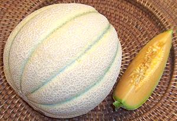

This melon is a specialty of Dulcinea Farms, a large melon grower in California. It is deeply sutured like an Eastern Muskmelon, but has the fine mesh pattern and excellent shipping properties of a Western Muskmelon. The Tuscan is a beautiful melon to look at - right up to the point when it is fully ripe - then it becomes as grungy as shown the photo.
The photo specimen weighed just over 6 pounds and was 8 inches long and 6-1/2 inches in diameter. It was eaten the day after this photo was taken and was perfectly ripe and delicious.
When properly ripened this melon is very sweet - right out to the rind, and has excellent muskmelon flavor. The flesh is thick and the seed cavity small. Even better, the flesh is still fairly firm and of quite even texture from center to rind making it excellent for dicing in fruit salads and the like. It is completely ripe when the green color in the sutures starts to fade and become uneven. The flower end will also have a fair amount of give and it will have a distinct muskmelon aroma. Be aware that fruit flies are as enthusiastic about this melon as I am.
More on Melons.

This photo shows a "Tuscan Style Cantaloupe" as you will find them in
stores. It has not yet reached optimum ripeness but it looks real nice
and is very firm for shipping. Leave it lie around on the kitchen floor
for awhile until it looks something like the photo at the top. Yum!